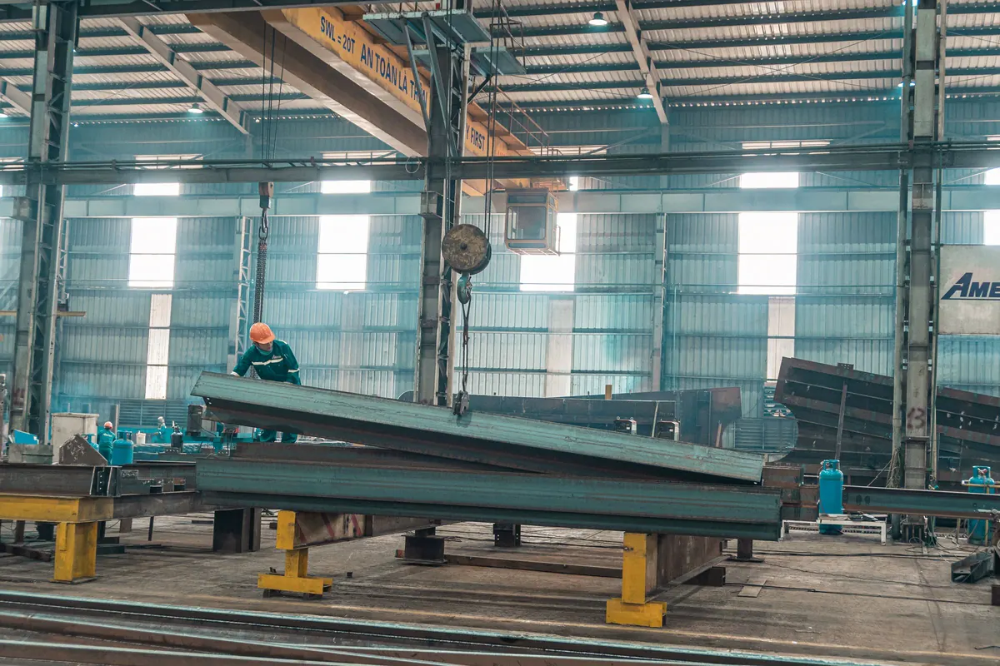

Galpão metálico começa na escolha do pórtico
Esta página trata do galpão como sistema estrutural metálico: pórtico, vão, pé-direito, ponte rolante, mezanino, cobertura, fechamento e ação do vento. A obra completa do galpão — sondagem, terraplenagem, fundação, piso industrial e instalações — está descrita em construção de galpões e quadras. O panorama de tudo o que fazemos em aço fica na página de estruturas metálicas em Vitória ES.
Um galpão metálico é, na essência, uma sequência de pórticos repetidos ao longo do comprimento, ligados por terças, longarinas e contraventamentos. A forma desse pórtico decide quanto aço vai para a obra, quanto trabalho de oficina ele exige, como a estrutura recebe uma ponte rolante e o que acontece quando for preciso ampliar. Por isso é a primeira decisão do projeto — e a que mais pesa no resultado.
Pórtico de alma cheia
Pilares e vigas de cobertura em perfil I, laminado ou soldado, com ligação rígida entre eles. Tem poucas peças, fabricação e montagem rápidas, superfície fácil de pintar e de inspecionar, e acomoda com naturalidade console e viga de rolamento. É a solução mais comum em galpão industrial e logístico de vão médio, e a que melhor convive com mudanças de layout.
Galpão treliçado
A cobertura é vencida por treliças — banzos superior e inferior ligados por diagonais e montantes —, apoiadas em pilares de alma cheia ou também treliçados. Em vão grande e cobertura leve, costuma consumir menos aço. Em troca, tem muito mais peças, ligações e metros de solda, mais superfície a proteger contra corrosão e mais cantos que acumulam poeira e umidade. Perfis formados a frio, dimensionados pela ABNT NBR 14762, aparecem com frequência em treliças e terças de galpões leves; perfis laminados e soldados seguem a ABNT NBR 8800.
Não existe resposta pronta. Comparamos as duas soluções para o vão, a altura, a cobertura e as cargas daquele galpão, e a escolha sai do número — não do catálogo de quem vende um dos dois.
Vão livre, modulação e pé-direito
Vão livre é a distância entre as filas de pilares na direção transversal. Quanto maior, mais livre a operação e mais pesado o pórtico. Vão que o layout não exige é aço comprado sem retorno; vão curto demais trava o porta-palete, a manobra da empilhadeira ou a linha de produção por décadas. O vão certo parte da operação que vai acontecer embaixo dele.
Modulação é o espaçamento entre pórticos no comprimento. Ela governa o tamanho das terças e longarinas, o número de fundações e a posição de portões, docas e janelas. Modular pensando nas medidas comerciais de telha e de perfil reduz corte, perda e emenda.
Pé-direito é medido até a face inferior da estrutura de cobertura, não até a cumeeira. Ele depende do último nível de armazenagem, da altura do gancho da ponte rolante, da passagem de sprinklers, dutos e luminárias, e da folga exigida por empilhadeira com mastro levantado. Cada metro a mais aumenta pilar, fechamento lateral e carga de vento.
Mezanino dentro do galpão
Mezanino metálico para escritório, vestiário ou estoque leve aproveita o pé-direito sem ampliar a área construída. Pode ser apoiado em pilares próprios ou ligado à estrutura do galpão — nesse caso, o pórtico precisa ter sido calculado para essa carga. A sobrecarga de uso segue a ABNT NBR 6120: arquivo, estoque e escritório têm valores diferentes, e mezanino projetado para escritório que vira depósito é um problema estrutural esperando acontecer.

Galpão com ponte rolante: viga de rolamento, console e pilar
Ponte rolante muda o galpão de categoria. Além do peso próprio da ponte e da carga içada, a estrutura passa a receber impacto vertical, esforço horizontal transversal do movimento do carro, frenagem longitudinal da ponte e milhares de ciclos de carga que levam à verificação de fadiga. Nada disso existe num galpão de armazenagem comum.
O que o projeto precisa resolver
- Viga de rolamento: dimensionada para carga móvel e fadiga, com flecha limitada para a ponte não trepidar nem descarrilar, trilho fixado com possibilidade de alinhamento e batentes nas extremidades;
- Console ou pilar escalonado: console soldado ao pilar para pontes mais leves; pilar com dois níveis ou pilar duplo quando a carga cresce — a escolha depende da capacidade e da classe de utilização da ponte;
- Contraventamento: a frenagem longitudinal precisa de um caminho até a fundação, normalmente por contraventamento vertical em X ou em pórtico na linha do caminho de rolamento;
- Base e fundação: as reações mudam de ordem de grandeza e precisam ser passadas cedo ao projeto de fundação;
- Folgas: distância livre entre o topo da ponte e a cobertura, e entre a cabeceira e os pilares, conforme os dados do fabricante da ponte.
O fabricante da ponte fornece as cargas por roda e a classe de serviço; a estrutura é calculada a partir desses dados, pela ABNT NBR 8800. A operação da ponte segue a NR-11 e, como equipamento, a NR-12 — tema que atendemos em montagem industrial. Colocar ponte rolante em galpão existente é possível em alguns casos, mas só depois de verificar seções, ligações e fundação do que já está de pé.
Cobertura, fechamento e ventilação sob o vento do litoral
Ação do vento pela NBR 6123
Galpão metálico é leve para o tamanho que tem. O esforço que governa boa parte das peças é o vento — e, na cobertura, a sucção, que puxa telha e terça para cima. A ABNT NBR 6123 parte da velocidade básica da região e a corrige por fatores de topografia, de rugosidade do terreno e altura, e de uso da edificação. Galpão em área aberta voltada para o mar, comum em Serra, Vila Velha e Aracruz, enquadra-se em rugosidade mais severa do que um galpão cercado de construções.
Um detalhe que costuma ser esquecido: portão grande aberto durante uma ventania gera sobrepressão interna que soma com a sucção externa na cobertura. O projeto considera as aberturas dominantes; a fixação da telha, o espaçamento das terças e a ancoragem das bases saem dessa conta.
Telha simples ou sanduíche
Telha metálica simples atende depósito e área de passagem. Telha sanduíche ou termoacústica, com núcleo isolante entre duas chapas, reduz calor irradiado, ruído de chuva e condensação pingando sobre produto — e pesa mais, o que precisa estar nas terças desde o início. Faixas de telha translúcida trazem luz natural, com cuidado para não aquecer demais a área de trabalho.
Fechamento lateral
Telha metálica sobre longarinas, alvenaria até certa altura com telha acima, ou painel isotérmico quando há controle de temperatura. A alvenaria ligada a pilar metálico precisa de junta que absorva o deslocamento lateral do pórtico sob vento, senão trinca na primeira estação.
Lanternim e ventilação natural
Lanternim na cumeeira, combinado a aberturas baixas nas fachadas, aproveita o ar quente que sobe para renovar o ar do galpão sem energia. Em galpão de produção com fonte de calor, pode ser complementado por exaustão industrial. O lanternim também é peça de cobertura: precisa de proteção contra chuva de vento e de fixação verificada à sucção.
No litoral, a proteção contra corrosão entra junto com a cobertura: esquema de pintura ou galvanização compatível com a agressividade do ambiente, fixadores com revestimento adequado e detalhes sem pontos de acúmulo de água. Estrutura que já apresenta perda de seção é assunto de patologias e corrosão estrutural.

Galpão metálico ou pré-moldado de concreto
As duas soluções são boas; a pergunta é qual se encaixa no seu galpão. Os critérios que realmente separam uma da outra:
| Critério | Estrutura metálica | Pré-moldado de concreto |
|---|---|---|
| Vão livre grande | Vence com peso próprio baixo | Peças pesadas, exige içamento maior |
| Prazo | Fabricação em oficina corre junto com a fundação | Também industrializado; depende da fila da fábrica |
| Ponte rolante | Console e viga de rolamento integrados ao pórtico | Possível, com consoles previstos na fabricação das peças |
| Ampliação futura | Parafusar novos pórticos na empena de expansão | Possível, com mais restrição de ligação |
| Resistência ao fogo | Verificada pela NBR 14323; pode exigir proteção passiva | Melhor desempenho natural |
| Ambiente litorâneo | Exige tratamento anticorrosivo e manutenção de pintura | Menos sensível, mas também exige cobrimento adequado |
| Fundação | Reações menores, conforme o sistema de base | Cargas maiores por pilar |
A exigência de resistência ao fogo vem da ABNT NBR 14432 e das instruções do Corpo de Bombeiros, conforme uso, área e altura — e pode pesar a favor de um ou de outro. Muitos galpões acabam mistos, com pilares de concreto e cobertura metálica.
Ampliação futura decide o projeto de hoje
Se há chance de crescer, a empena do lado da expansão é projetada como pórtico intermediário, não como fechamento definitivo: na ampliação, basta retirar o fechamento e continuar a sequência de pórticos. Fundação dessa linha, contraventamento e calha também são pensados para isso. Ampliar um galpão que não foi preparado exige verificar a estrutura existente antes de ligar qualquer peça nova a ela.
O que define o custo do galpão metálico
Preço por metro quadrado de galpão metálico sem projeto é número sem base. Dois galpões com a mesma área podem ter consumo de aço muito diferente. O que efetivamente mexe no custo:
- Vão livre e pé-direito: determinam o tamanho de pilar e viga — e, portanto, o peso de aço;
- Ponte rolante: viga de rolamento, console e pilar reforçado adicionam aço e fabricação;
- Vento do local: galpão alto e exposto ao mar pede mais terças, mais fixação e bases mais robustas;
- Sistema estrutural: alma cheia ou treliça, perfil laminado, soldado ou formado a frio, base rotulada ou engastada — base engastada alivia o pórtico e carrega a fundação;
- Ligações: parafusadas em campo montam mais rápido; solda em campo exige mais controle;
- Tratamento superficial: o esquema anticorrosivo exigido no litoral custa mais que uma pintura de fundo simples, e economizar aqui aparece em poucos anos;
- Cobertura e fechamento: telha simples, sanduíche, translúcida, lanternim, calhas e rufos;
- Mezanino, portões e acessórios: cada um com sua estrutura de apoio;
- Logística e montagem: acesso ao terreno, porte do guindaste e montagem com a operação vizinha funcionando.
O caminho para um orçamento comparável é o projeto: com o projeto estrutural em mãos, o fornecimento de aço estrutural sai em quilos por perfil, a fabricação das peças é medida em horas de oficina e a montagem de estruturas metálicas é planejada por frente de trabalho. Quem quer tudo resolvido com um único contrato — do terreno ao galpão em operação — contrata a obra em estrutura metálica completa.
Perguntas frequentes sobre galpão metálico
Qual a diferença entre galpão de pórtico de alma cheia e galpão treliçado?
No pórtico de alma cheia, pilar e viga de cobertura são perfis I, laminados ou soldados, ligados de forma rígida: a estrutura é mais limpa, rápida de fabricar e de montar, fácil de pintar e de inspecionar, e aceita bem ponte rolante. No galpão treliçado, a cobertura é vencida por treliças de banzos e diagonais: em vão grande costuma consumir menos aço, mas tem mais peças, mais ligações, mais superfície a proteger contra corrosão e mais pontos de acúmulo de sujeira. A escolha sai da comparação feita no projeto para o vão, a altura e as cargas daquele galpão, não de preferência do fornecedor.
Dá para instalar ponte rolante em galpão metálico que já existe?
Às vezes dá, mas nunca sem verificação. Ponte rolante introduz carga móvel, impacto vertical, esforços horizontais de frenagem e fadiga — esforços que o galpão comum não foi calculado para receber. Antes de qualquer decisão, levantamos as seções reais dos pilares, o estado das ligações e da base, a capacidade da fundação e o contraventamento. Conforme o resultado, a solução pode ser reforço dos pilares com console, pilares independentes para o caminho de rolamento ou a indicação de que a estrutura não comporta a ponte pretendida.
Telha simples ou telha sanduíche no galpão metálico?
Depende do que acontece embaixo dela. Telha metálica simples atende depósito, estoque de material que não sofre com calor e área de passagem. Telha sanduíche ou termoacústica, com núcleo isolante entre duas chapas, é indicada quando há gente trabalhando, produto sensível a temperatura, ruído de chuva que atrapalha a operação ou risco de condensação pingando sobre o produto. A telha termoacústica pesa mais e a terça precisa ser calculada para ela — trocar de uma para outra depois da obra pronta exige verificar a estrutura.
Galpão metálico perto do mar enferruja mais rápido?
Sim, a névoa salina acelera a corrosão, e na faixa litorânea da Grande Vitória isso define o projeto. A proteção começa no detalhamento — evitar frestas, cantos que acumulam água e peças sem acesso para pintura — e segue na especificação do tratamento: preparo de superfície, esquema de pintura compatível com a agressividade do ambiente ou galvanização a fogo, e fixadores e telhas com revestimento adequado. Estrutura bem protegida ainda precisa de inspeção periódica e retoque de pintura nos pontos danificados.
Vocês fazem o galpão metálico completo, do projeto à montagem?
Sim. Fazemos o projeto estrutural, o fornecimento do aço, a fabricação das peças, o tratamento superficial, o transporte e a montagem da estrutura, da cobertura e do fechamento, com ART. Quando o cliente precisa também de terreno, fundação, piso e instalações, a obra inteira é conduzida por nós, com a estrutura metálica integrada ao restante do empreendimento.
Galpão metálico na Grande Vitória
Estrutura de galpão industrial, logístico e comercial nas cidades da região:
Vai construir ou ampliar um galpão?
Mande dimensões, uso, altura e se haverá ponte rolante. Retornamos com a concepção da estrutura e proposta.